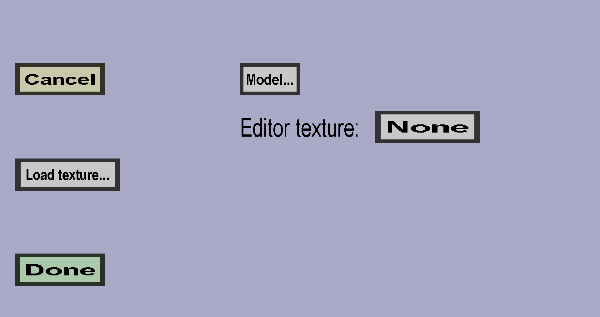

The custom block model menu can be used to create custom block models. Using a custom model, you can give your block any shape you want. Since writing models by hand is rather complicated, I would recommend using a tool like Blockbench to do it for you. This menu should look like this:
Use the Model... button to select your custom model. This uses the same tool as the custom item model creator because item models are very similar to block models in minecraft. Note: all custom blocks of this plug-in are actually mushroom blocks, which are supposed to be completely solid. If your custom model is not, you can get visual glitches (especially when the block is placed adjacent to other blocks).
You also need to choose an Editor texture. This texture will be shown in the block list and item list in the Editor, but not in-game. This texture is required mostly because of technical reasons. If you don't have a nice texture ready, you can use the Load texture... button.